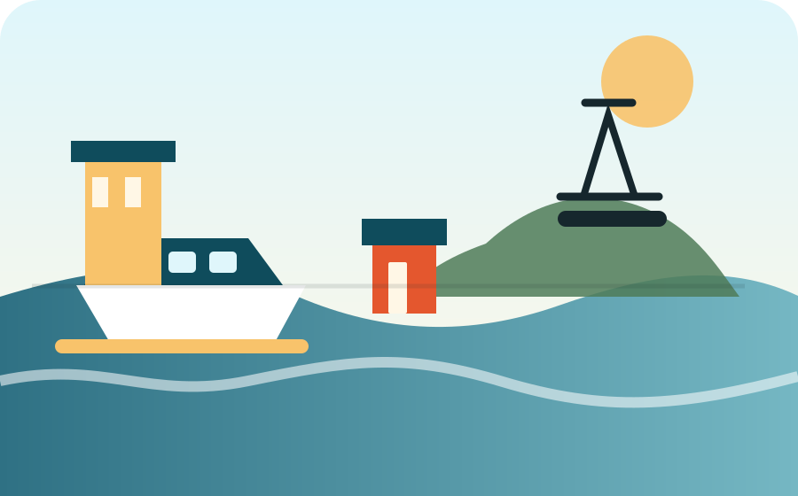

今回の要点
巌流島を入れても16時帰着を守るためのコツです。
9:20の門司港発・巌流島行きで海峡へ。11:00の跳ね橋、焼きカレー、門司港プリン、レトロ建築まで一日で楽しむスマホ用しおりです。
巌流島を入れても16時帰着を守るためのコツです。
島に約70分滞在し、11:00の跳ね橋を見てから焼きカレーへ。
本命は 門司港 9:20発 → 巌流島 9:30頃着 → 巌流島 10:40発 → 門司港 10:50頃着。島での写真・散策に余裕を持たせます。
Plan Bは巌流島10:00発で早く戻り、プリンセスピピの開店直後を狙う「食事優先」プランです。

海風対策に薄手の上着、船の揺れが心配なら酔い止め、巌流島では日差し対策の帽子があると安心です。
巌流島・跳ね橋・レトロ建築を一目で確認。